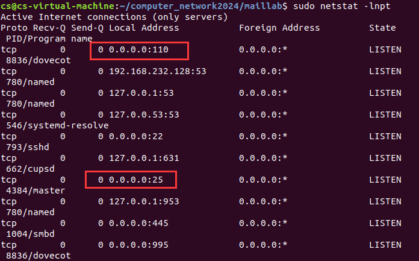
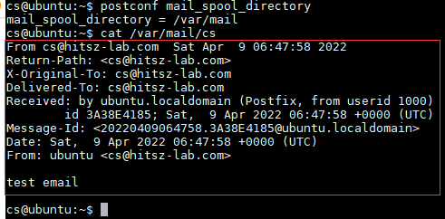
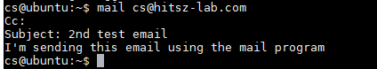
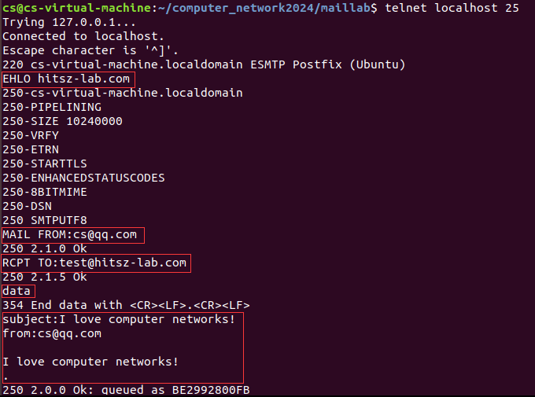
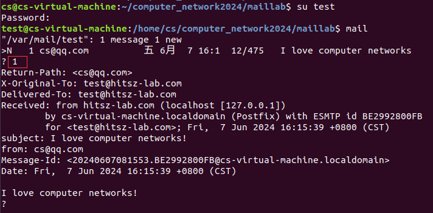
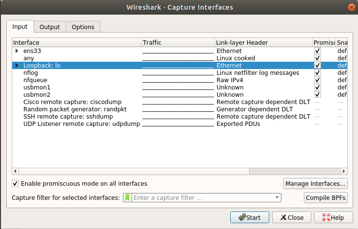
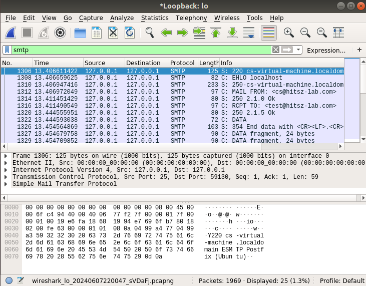

1. Ubuntu搭建邮件服务器
本文档参考：https://blog.csdn.net/oolocal/article/details/52861583 和 https://blog.csdn.net/cpu0606/article/details/89841784
1.1. 准备工作
你需要提前安装好ubnutu。本文档提供的安装步骤是在20.04版本上完成的，其他版本的安装步骤大同小异。
1.2. 安装Postfix
Step1： 更新本地apt包：
1sudo apt-get update
如果更新太慢了，可以切换国内更新源（切换更新源可自行百度）
Step2： 安装Postfix：
1sudo DEBIAN_PRIORITY=low apt install postfix
安装过程有好些提示，我们是这样选择的：
General type of mail configuration?: 选择 Internet Site
System mail name: 这里填hitsz-lab.com， 以后你用户user的邮箱就是user@hitsz-lab.com。
Root and postmaster mail recipient: 比如你的ubuntu用户名是cs，那就填 cs，这样根用户等的邮箱都是cs接收。
Other destinations to accept mail for: 新增hitsz-lab.com。
Force synchronous updates on mail queue?: 选择 No
Local networks: 缺省就好。
Mailbox size limit: 邮箱限定封数，0则是不限制。
Local address extension character: + 就是加号，不改。
Internet protocols to use: 选All
选择错了也没关系，可以用下面命令修改：
1sudo dpkg-reconfigure postfix
安装mailutils客户端和dovecot-pop3
1sudo apt-get install mailutils
2sudo apt-get install dovecot-pop3d
重启动 Postfix 使更改生效：
1sudo systemctl restart postfix
打开防火墙：
1sudo ufw allow Postfix
使用netstat来查看postfix的监听情况：
1sudo netstat -lnpt
需要确保25和110端口已启用。

如果25和110端口没有启用，请修改防火墙:
1sudo ufw allow 110/tcp
2sudo ufw allow 25/tcp
创建邮件用户，添加test用户，输入密码，一路回车，最后输入Y完成
1adduser test
1.3. 发送测试邮件
Postfix在安装时，会同时安装一个sendmail的程序（/usr/sbin/sendmail）。你可以用这个sendmail二进制程序向你的Gmail邮箱发送一封测试邮件。在服务器上输入下面的命令：
1echo "test email" | sendmail cs@hitsz-lab.com
这是一条很简单的命令， sendmail从标准输入读取到test email，将test email作为邮件正文，然后发送到hitsz-lab.com邮箱。现在你可以查看你的hitsz-lab.com邮箱，应该会看见你的测试邮件。尽管我们没有指明发件人地址，但Postfix会自动将你的域名添加到发送人地址中。每个用户的邮件保存在/var/spool/mail/<username>和/var/mail/<username>文件中。如果你不知道收件箱保存在哪里，运行这条命令：
1postconf mail_spool_directory

1.4. 使用mail程序来发送邮件
sendmail的功能非常有限，现在让我们来安装一个命令行邮箱客户端。
1sudo apt-get install mailutils
使用mail发送邮件的命令为
1mail cs@hitsz-lab.com

输入主题和正文后，按Ctrl+D来发送邮件。
要查看收件箱，输入mail就行了。
1mail
以下是用mail管理收件箱的操作方法。
要查看第一封邮件，输入数字1。如果邮件只显示了一半，按Enter键来显示剩下的消息。
将所有邮件从第一封排序，输入h。
要显示最后一屏邮件，输入h$或z。
阅读下一封邮件，输入n。
删除第一封邮件，输入d 1。
删除第一封，第二封和第四封邮件，输入d 1 2 4。
删除前10封邮件，输入d 1-10。
回复第1封邮件，输入reply 1。
退出mail程序，输入q或x。
如果你按q来退出mail程序，那么已经阅读过的邮件将会从/var/mail/<username>移动到/home/<username>/mbox文件中。这意味着其他邮箱客户端将不能阅读这些邮件。如果你不想移动已经阅读的邮件，输入x退出mail程序。
1.5. 使用telnet发送测试邮件
链接到SMTP本地服务
命令如下：

登录到test用户，查看邮件
1su test
2
3mail

查看邮件后，请用su命令切换原来的用户。
1.6. 使用socket编程发送测试邮件
当用本地邮件服务器测试时，不需要输入AUTH login和授权码。具体的命令如下：
1S: 220 cs-virtual-machine.localdomain ESMTP Postfix (Ubuntu)
2C: EHLO localhost
3S: 250-cs-virtual-machine.localdomain
4250-PIPELINING
5250-SIZE 10240000
6250-VRFY
7250-ETRN
8250-STARTTLS
9250-ENHANCEDSTATUSCODES
10250-8BITMIME
11250-DSN
12250 SMTPUTF8
13C: MAIL FROM: <cs@hitsz-lab.com>
14S: 250 2.1.0 Ok
15C: RCPT TO: <test@hitsz-lab.com>
16S: 250 2.1.5 Ok
17C: DATA
18S: 354 End data with <CR><LF>.<CR><LF>
19C: From: cs@hitsz-lab.com
20C: To: test@hitsz-lab.com
21C: Subject: Mail subject
22C: MIME-Version: 1.0
23...
1.7. 使用wireshark捕获报文
需要注意的是，在当前本地环境中，服务器和客户端都是在同一台机器上，也就是，服务器和客户端的报文交互都是在本地。
请在当前的linux环境下安装wireshark。
打开wireshark，选择“Loopback: lo”

